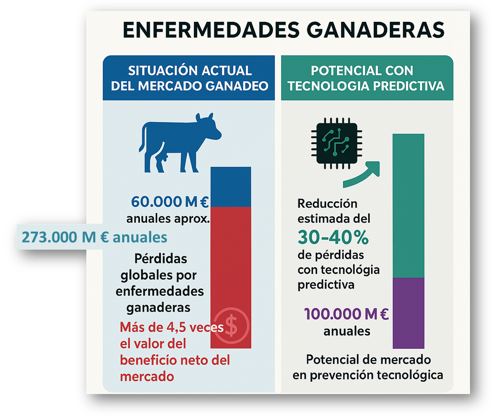
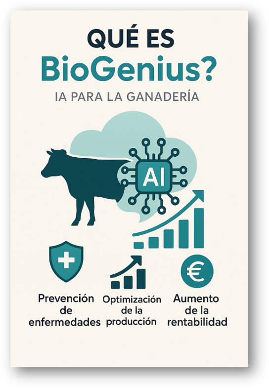
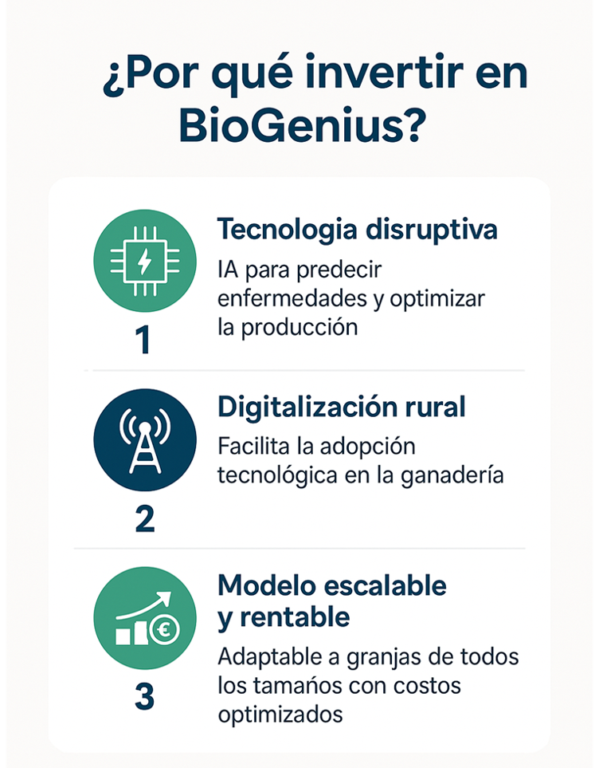

Inteligencia Artificial para Ganadería
Transformamos la ganadería con IA generativa para prevenir enfermedades, optimizar la producción y aumentar la rentabilidad.

"Más de 200.000 millones de euros se pierden cada año por enfermedades animales evitables."

| Criterio | BioGenius | Connecterra | Cainthus | Boalvet |
|---|---|---|---|---|
| Tipo de IA | Generativa + RAG + simulaciones | Machine learning | Visión artificial | IA supervisada |
| Necesidad de hardware propio | ☑ No | ☑ Sí (sensores) | ☑ Sí (cámaras) | ☑ No |
| Multiespecie | ☑ Sí (bovino, ovino, porcino, etc.) | ☑ Parcial (principalmente bovino) | ☑ Solo vacuno | Solo bovino lechero |
| Predicción de enfermedades | ☑ Predictiva y preventiva | ☑ Principalmente monitoreo de actividad | ☑ Detección visual (post-síntomas) | ☑ Sí, pero limitada por datos |
| Recomendaciones automáticas | ☑ Sí, personalizadas | ☑ No | ☑ No | ☑ Limitadas |
| Sensor-agnóstico | ☑ Sí | ☑ No | ☑ No | ☑ Parcial |
| Cobertura global potencial | ☑ Alta (no depende de hardware local) | Media (requiere instalación física) | Media (infraestructura específica) | Media |
| Modelo de negocio | SaaS + licencias + datos + servicios | Hardware + suscripción | Licencia de hardware + plataforma | SaaS tradicional |
| ESG/sostenibilidad | ☑ Totalmente alineado | ☑ Limitado | ☑ No enfoque específico | ☑ Parcial |

| Nivel | Definición | Valor estimado (€ / año) | Comentario |
|---|---|---|---|
| TAM | Mercado total disponible | ~7.000.000.000.000 € | Agricultura, ganadería y sostenibilidad global |
| SAM | Mercado servible | ~100.000.000.000 € | Ganadería inteligente en mercados estratégicos |
| SOM | Mercado alcanzable | ~100.000.000 € | ($10.000$ clientes x $10.000 €/año$) |
2 Millones € para desarrollo, pilotos y marketing.
| Año | Clientes estimados | Ingresos (M €) | EBITDA (%) | EBITDA (M €) |
|---|---|---|---|---|
| 1 | 100 | 0,5 | -25% | -0,125 |
| 2 | 500 | 3 | 10% | 0,3 |
| 3 | 1500 | 15 | 25% | 3,75 |
| 4 | 5000 | 50 | 30% | 15 |
| 5 | 10000 | 100 | 35% | 35 |
Ingresos proyectados en 5 años: 100 Millones € / año